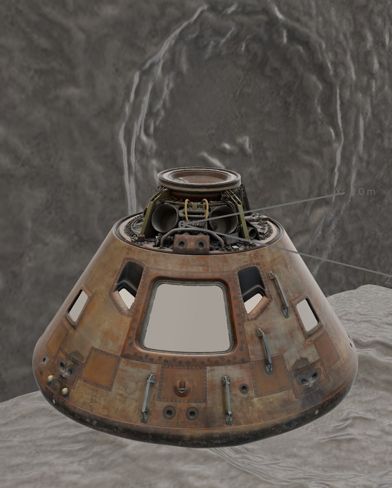
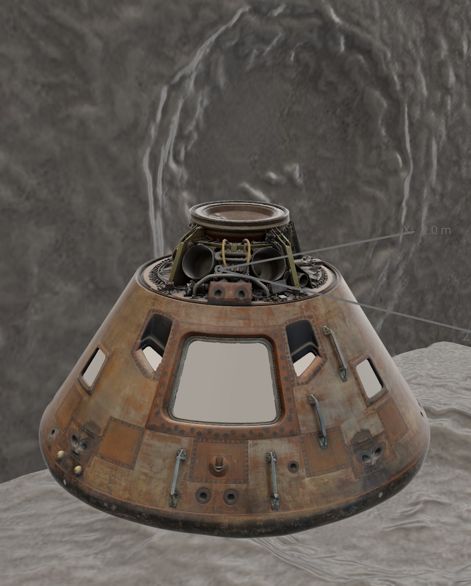

Neil Armstrong's SpaceSuit
Neil Armstrong's A7-L spacesuit, displayed at 70 pounds (31.8 kg) with a mannequin and trays, was a vital component of the Apollo 11 mission. Constructed from advanced materials like beta cloth, rubber, nylon, and plastic, it included durable aluminum connectors, brass zippers, and Chromel-R gloves designed to withstand the harsh conditions of space and the Moon’s surface. The suit provided life-sustaining oxygen, temperature regulation, and pressure, while allowing mobility and dexterity for tasks like collecting lunar samples. Designed for comfort during extended use, it could support astronauts for up to 115 hours and serve as an emergency system for 14 days without pressure. Its innovative design and versatility made it indispensable for the success of lunar exploration.

Exterior of Apollo Spacecraft
The Apollo 11 Command Module, named Columbia, was a crucial part of the mission that landed the first humans on the Moon. It served as the living space for astronauts Neil Armstrong, Buzz Aldrin, and Michael Collins during their journey to and from the Moon. Columbia was the only part of the spacecraft to return to Earth after the mission, bringing the astronauts safely home. Built by North American Rockwell, it was designed to withstand the harsh conditions of space. The Command Module was part of the larger Apollo spacecraft, which included the Service Module for propulsion and the Lunar Module, "Eagle," which Armstrong and Aldrin used to land on the Moon. Today, it is displayed at the Smithsonian National Air and Space Museum.
 

Interior of Apollo Spacecraft
The interior of the Apollo 11 spacecraft was designed for safety and practicality. It used strong, lightweight materials like aluminum and stainless steel to handle extreme conditions. Surfaces were covered with flame-resistant materials, and wires were insulated with Teflon to prevent overheating. Padded straps and Velcro kept astronauts and equipment in place during zero gravity. Important controls and instruments were easy to reach, and the cabin was pressurized to provide breathable air. The design ensured the spacecraft could withstand the forces of launch, the vacuum of space, and the heat during re-entry, keeping the astronauts safe throughout their journey.